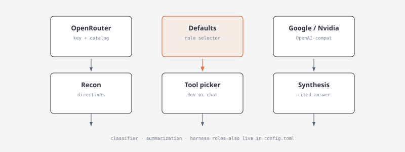
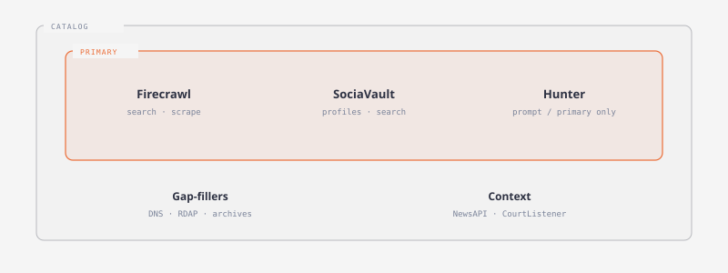

Providers

Providers (Models in the TUI) has Defaults, OpenRouter, Google, and Nvidia tabs. Connections supply credentials; Defaults independently selects a provider and model for each role (Recon, Tool picker, Synthesis, Classifier, Summarization, and investigation roles). Changing or checking a connection does not change any role. Existing Writer configuration initializes Recon and Synthesis during migration. The Tool picker defaults to OpenRouter with typesafe/jev-1.13, seeded only when its provider and model are both empty.
Google uses a Google AI Studio API key (GEMINI_API_KEY, then GOOGLE_API_KEY) against https://generativelanguage.googleapis.com/v1beta/openai. Nvidia uses an NVIDIA API Catalog key (NVIDIA_API_KEY) against https://integrate.api.nvidia.com/v1. OpenRouter uses an API key or OPENROUTER_API_KEY; its optional HTTPS endpoint is configurable. Verification checks the current draft without saving it. Grok and OpenAI accounts already stored in auth.json keep working as legacy assignments until the user picks a replacement; they are not shown as new-setup tabs and their keys are never sent to Google or Nvidia. Account credentials are stored in ~/.argos/auth.json with owner only permissions on Unix. Provider authentication and model usage follow the provider's own terms.
argos login
argos defaults show
argos defaults set recon --provider openrouter --model <model-id>
argos defaults set tool-picker --provider openrouter --model typesafe/jev-1.13
argos defaults set synthesis --provider openrouter --model <model-id>
argos models --role tool-picker
argos models --role synthesis
argos logoutThe Recon role derives the turn's three questions and extracts input bindings from observations. The Tool picker role picks one tool per request until the ordered list is complete. Jev decisions models (typesafe/jev-1.13, ~typesafe/jev-latest, or an id containing /jev) use POST https://openrouter.ai/api/alpha/decisions with the OpenRouter key; any other model uses the chat transport with a JSON reply. defaults show reports tool_picker: { provider, model, transport } with transport set to decisions or chat. tool-picker and tool_picker both name the role. Pin the concrete Jev id rather than the ~typesafe/jev-latest alias so a later release cannot change picker behavior without a Defaults change. The Synthesis role writes cited answers and extracts evidence-backed claims. On Defaults, a role selector (Recon, Tool picker, Synthesis, Classifier, Summarization, and investigation roles) chooses the role, and Provider and Model open a list for that role only. Saving a role writes config.toml only, never credentials, and the System event log records the change (for example defaults.tool_picker: … -> …). For the Tool picker on OpenRouter, the model list always offers Jev 1.13 (decisions) first, even when GET /api/v1/models omits it; argos models --role tool-picker does the same. The provider list is the accounts connected on this machine (Google, Nvidia, OpenRouter, Local, plus a legacy Grok/OpenAI assignment until it is replaced). The model list is what that account is allowed to call. ChatGPT subscription selects the Codex default. A saved model identifier is retained if a live catalog is unavailable. argos osint user-agent sets the identifying contact string for public HTTP services separately from model defaults. When it is unset or blank, every OSINT request sends the built-in Argos OSINT/0.1 (…) User-Agent; a request never goes out with an empty User-Agent.
OSINT data providers

Firecrawl, SociaVault, and Hunter are the primary OSINT providers. Each has an API key: FIRECRAWL_API_KEY, SOCIAVAULT_API_KEY, and HUNTER_API_KEY, or the key field shown on any of that provider's tools in OSINT. A saved key overrides the environment variable. A second free-tier account is the Fallback field on the same row (FIRECRAWL_API_KEY_FALLBACK, SOCIAVAULT_API_KEY_FALLBACK, HUNTER_API_KEY_FALLBACK, and the same pattern for NewsAPI, CourtListener, GNews, NewsData, and Currents). When the primary key comes back rate-limited or out of quota, that call is retried once with the fallback key, and later calls in the process use the fallback first. Atlas keeps a separate daily counter for the fallback account. Keys are sent only to the provider's own API host: a bearer token for Firecrawl, and an X-API-Key header for SociaVault and Hunter. Hunter keys never go in the URL. A completed result is cached for the provider's credit-reset interval: one day when the plan resets daily, one week when it resets weekly, and 30 days when it resets monthly. Firecrawl and Hunter reset monthly. SociaVault's prepaid credits never reset, and the public tools have no credit plan, so both cache for 30 days. NewsAPI, CourtListener, and HackerTarget reset daily. Failed results are never cached. Live smoke tests for these providers are #[ignore] and need real keys.
| Provider | Tools | Notes |
|---|---|---|
| Firecrawl | search, scrape, map, batch scrape, crawl (off by default), extract | Batch scrape and crawl are polled jobs that are charged per page. Extract uses a fixed schema and costs 5 credits. |
| SociaVault | profile, search, search users, user content, Google search | 44 one-credit routes. Followers/following and single-post routes are excluded. Google search is only a fallback after a weak Firecrawl search. |
| Hunter | domain finder, email count, domain search, email finder, email verifier, company enrichment, email insight, person enrichment, combined enrichment | Read endpoints only. Inputs come from the prompt, Firecrawl, SociaVault, or earlier Hunter calls. hunter_tech_lookup is an alias for company enrichment. |
Typed provider diagnostics
Provider diagnostics record every failed outbound request with structured information to distinguish configuration, authentication, and server issues:
- Stages:
configuration,admission,connect,first_response,response,stream,parse,validation,persistence - Categories:
auth,permission,invalid_model,configuration,malformed_request,unsupported_transport,rate_limited,server,timeout,network,stream_interrupted,premature_eof,sse_error,malformed_payload,token_limit,refused,empty,invalid_result,persistence,cancelled - Budgeted executor: Limits outbound requests to 2 per execution (1 streaming, 1 non-streaming), with admission wait consuming no attempt, and non-retryable categories stopping after 1 request
Diagnostics are used by the Brain summary failure card, the Jobs dashboard, and the provider_verify CLI command.
Budgeted executor
The executor limits tool-picker requests to 2 per turn and governs retry budgets for every provider call:
- 1 streaming request + 1 non-streaming fallback (or 2 streaming if provider refuses non-streaming)
- Admission wait polls the provider slot without consuming an attempt
- Non-retryable categories (auth, permission, model, configuration, malformed) stop after 1 request
- Retryable categories respect
Retry-Afterand shared backoff (capped) - Provider 429 and 503 defer picker calls and pick deterministic order when no primary tools remain
The executor integrates with the revision-aware cache and graph explanation jobs, ensuring deterministic fallbacks when streaming fails.
Graph explanation integration
Graph explanations use the same budgeted executor and run as durable jobs:
- One job per memory per provider/model combination
- Revision-aware cache with key: memory text revision + graph brief + focus + provider + model + prompt version
- Cached results are reused until any input changes
- Failures are persisted with diagnostics and don't remove memories or fail Atlas indexing
The provider verification shows graph explanation stages (compact, evidence, synthesis) with their own failure categories and guidance.
Provider transport modes
Two transport modes support tool picker requests:
- Decisions transport (
/alpha/decisions): Used by Jev decisions models (typesafe/jev-1.13,~typesafe/jev-latest, or any id containing/jev)
- One choice question per request for each remaining tool
- Confidence probability becomes that pick's confidence
- Below 0.45 confidence triggers deterministic fallback
- Chat transport: Used by all other models
- One completion returning
{ "tool_id", "serves", "needs", "produces", "reason" } - Validated and repaired once
- Same budget of 2 requests per turn
Both transports integrate with the admission system and respect provider slots.
Model roles and defaults
Three roles configure models independently:
- Recon: Questions and bindings
- Tool picker: Tool order (decisions or chat transport based on model id)
- Synthesis: Answers and evidence extraction
Jev decisions models (typesafe/jev-1.13, ~typesafe/jev-latest, /jev*) use the OpenRouter decisions transport. All other models use chat transport. The Tool picker defaults to OpenRouter typesafe/jev-1.13 when both provider and model are empty.
Verification and testing
Provider diagnostics are verified through:
- Unit tests for every failure category and stage
- Budgeted executor tests ensuring ≤2 requests
- Admission wait tests confirming no attempt consumption
- Cache invalidation tests for input changes
- Graph explanation tests covering provider integration
All diagnostics are written to events and shown in Jobs/Logs with redaction for security.
NewsAPI and CourtListener (issue #29) are keyed context providers, not primary providers. NewsAPI uses newsapi_api_key or NEWSAPI_API_KEY, sent only as the X-Api-Key header to newsapi.org. CourtListener uses courtlistener_api_token or COURTLISTENER_API_TOKEN, sent only as Authorization: Token <token> (with Accept: application/json) to www.courtlistener.com. Neither key ever appears in a URL, tool input, cache key, plan, or stored body (a body that echoes the key is stored redacted). Both are listed at 0 credits; their budgets are per-turn call caps. Each also accepts a fallback key (newsapi_api_key_fallback, courtlistener_api_token_fallback, or NEWSAPI_API_KEY_FALLBACK and COURTLISTENER_API_TOKEN_FALLBACK) that is used after a rate or quota response. A 401 or 403 does not switch accounts.
| Provider | Tools | Notes |
|---|---|---|
| NewsAPI | article search (/v2/everything), top headlines (/v2/top-headlines) | Exact-phrase q, pageSize 10 (search and headlines), no pagination. Optional from/to, language, sort_by, domains (search) and country, category (headlines). Developer plan: 100 requests a day, articles 24 h late, one month back. Cache 86400 s, the daily reset. status: error bodies (apiKeyInvalid, apiKeyMissing, rateLimited, …) become failed results with readable messages. |
| CourtListener | case law (type=o), federal dockets (type=r), judges (type=p) on GET /api/rest/v4/search/ | Exact-phrase q, first page only, at most 20 results, no highlight, never semantic or POST search. Optional court, filed_after, filed_before (case law). Free tier 5/min, 50/hour, 125/day: requests are spaced 12 s apart and 429s are not retried. Cache 86400 s, the daily reset. 401/403 become failed results with readable messages. |
| GNews | gnews_search on GET /api/v4/search | Keyword q of at most 200 characters, lang, max 10, optional from. Key GNEWS_API_KEY as X-Api-Key. Free tier 100 requests/day. Atlas uses Search because source.country is not on top headlines. Recon does not pick it. |
| NewsData.io | newsdata_latest on GET /api/1/latest | Keyword q, language, and size 10. The latest endpoint is the past 48 hours. timeframe is optional and paid; the free plan returns HTTP 422 if it is sent. Key NEWSDATA_API_KEY as apikey, redacted from the stored URL. Free tier 200 credits/day. Atlas only. |
| Currents | currents_latest on GET /v1/latest-news | language, uppercase country, page_size 20. Key CURRENTS_API_KEY as Authorization: Bearer. Free tier 250 requests/day. Atlas regional headlines only. |
| Wikipedia (public) | wikipedia_source_reliability | MediaWiki action=parse on English WP:RSP letter subpages. No API key. Maps perennial-source status to Admiralty Source Reliability A–F (gr→B, nc→C, gu→D, deprecated/blacklist→E, unlisted→F). Identifying osint_user_agent required. Index cached 30 days. News-context companion; Atlas insights scale claim confidence with the same index. |
Recon limits add news_calls_per_turn (default 2) and legal_calls_per_turn (default 3). Failed and rate-limited results are never cached.
Recon limits add sociavault_turn_credits_opening (default 3), sociavault_turn_credits_later (default 8), and google_fallback_min_results (default 3). These are spec defaults that still need confirmation. opening_sociavault_calls is still read from older settings files but is no longer used.